Here, we draw all the rational plane quintics with 7 flexes at the points 3,-2,-1,0,1,2,3 and one planar point at infinity. There are 21 such curves in all. However, since the set of ramification points is fixed under the involution that sends s to -s, we may reparameterize any such curve (reversing the direction of parameterization) to obtain another. This either gives the same parameterized curve back (up to fractional linear transformation in the plane), or it gives a different curve.
The images of the original curve and the reparameterization, as unparameterized curves in the plane are identical. An artifact of the method we use for drawing such curves is that the reparameterized curve is the image of the original curve, reflected about some vertical axis. Thus the curves which equal their reparameterization are symmetrical while those which do not are asymmetrical.
Altogether, there are 3 symmetrical curves and 18 asymmetrical curves with this choice of ramification. (In fact, this decomposition of 3 and 18 persists for any similar symmetric (under s maps to -s) choice of the 7 flexes with a planar point at infinity.
Below, we display the 21 curves. We mark the positions of the flexes by red circles. Some curves have only 6 flexes displayed; the 7th flex is on the line at infinity. We mark the positions of the planar point by a green circle. We indicate the positions of the solitary points by green crosses.
Some curves have a magenta line those curves have a pair of complex nodes, and the magenta line is the real line on which the complex conjugate nodes lie. While this magenta line appears to be tangent to the curve, it is not. (If it were, then it would have intersection number 6 with the complex curve, a quintic, and that violates Bézout's Theorem.) We strongly urge the reader to print out this page, the page of quintics with 7 flexes and one cusp, as well as the page consisting of quintics having 9 flexes and compare the pictures. Lastly, the MAPLE files used to draw these pictures are found in the subdirectory 7flexes1planar.maple/.
| There are five curves with three solitary points. The first curve is symmetric and has 3 nodes. The remaining curves are in asymmetric pairs, and each had one node and two comples nodex. Each pair has a solitary point close to a branch of the curve, and the pictures on the left are a magnification of the interesting part of the curves on the right. |
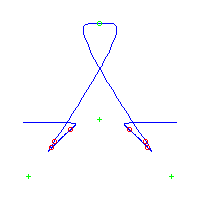 | |
| 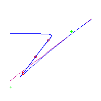 | 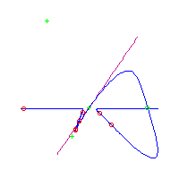 | 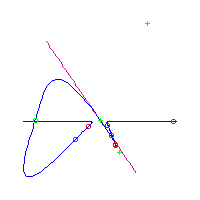 |
| 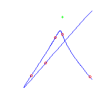 | 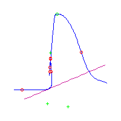 | 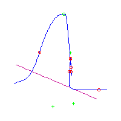 |
| There are 9 curves with 4 solitary points. Four have two crossings, while the rest have none but do have a pair of complex nodes. |
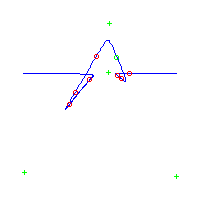 | 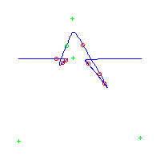 |
|
The first of the five remaining is symmetric, and the last asymmetric pair has a solitary point nestled close to a branch of the curve and to three flexes. We magnify and display the interesting part of one curve. |
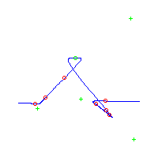 | 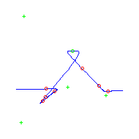 |
| 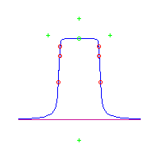 | 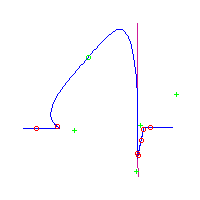 | 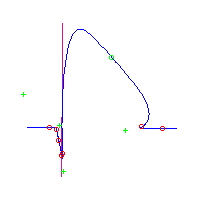 |
| 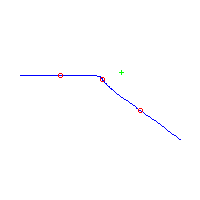 | 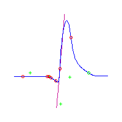 | 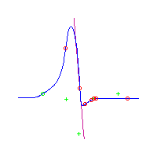 |
|
There are five curves with 5 solitary points. The first is symmetric, and two of its solitary points are obscured by nearby flexes. To the right, we display that curve, and also a magnification of its interesting parts. The last two curves also have an obscured solitary point, and we again magnify the interesting part of the curve. |
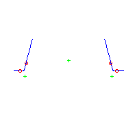 | 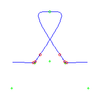 |
| 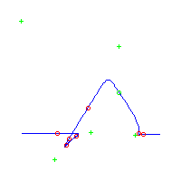 | 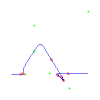 | |
| 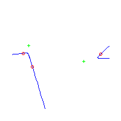 | 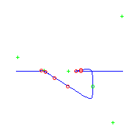 | 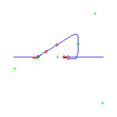 |
| 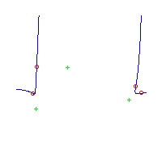 | 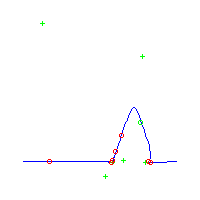 | 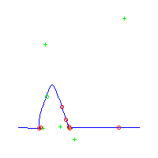 |